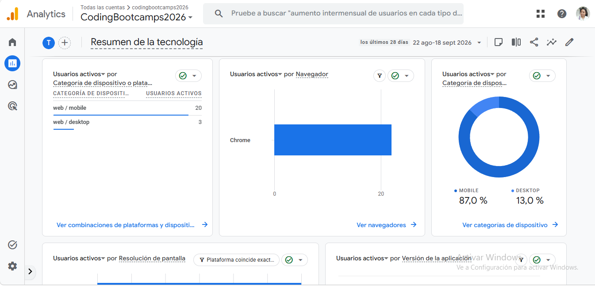
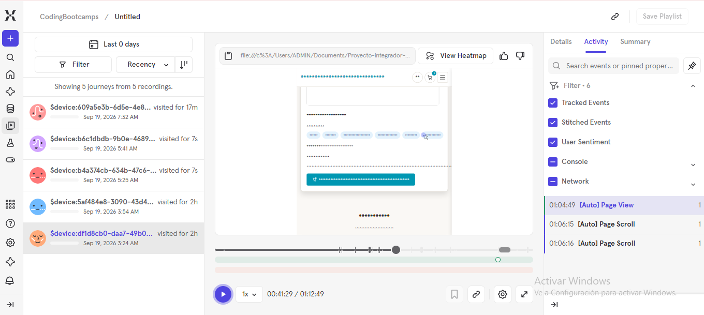
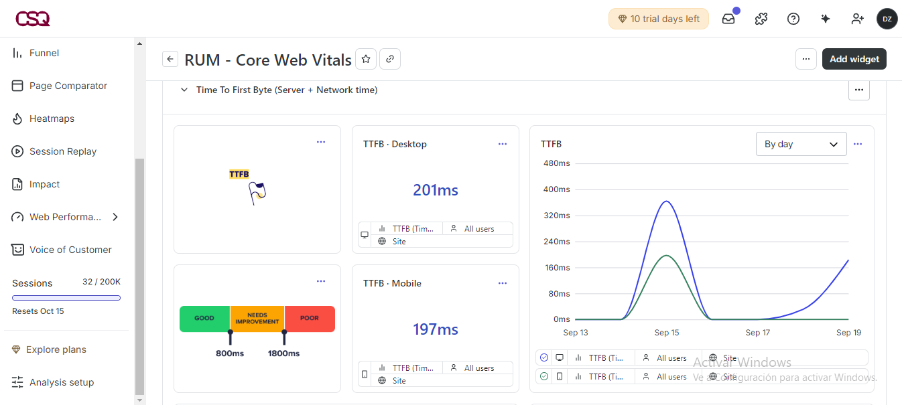

Darlin Zamora · Kefi-Fresh
Proyecto publicado: https://kefi-fresh.netlify.app
¿Qué elementos comunican cómo se usan?
#product-search usa type="search" con el placeholder "Buscar por categoría (ej. Postre, Artesanal...)", dejando claro qué se puede escribir ahí.data-cart-toggle muestra una insignia .cart-toggle__badge que solo aparece cuando hay productos agregados, comunicando que es interactivo y tiene estado.¿Qué patrones se repiten en todo el producto?
index.html, productos.html, nosotros.html y blog.html.¿Cómo sabe el usuario que su acción tuvo efecto?
data-form-feedback con role="status" y aria-live="polite" que anuncia el resultado del envío sin recargar la página.data-cart-count se actualiza al instante y se abre el drawer del carrito (.is-open) mostrando el nuevo total.¿Cómo guía la interfaz la atención del usuario?
.is-active para resaltarse sobre el resto.
Qué muestra: El resumen de tecnología de la propiedad GA4 (G-Q4PNCY6KV4), instalada en las 5 páginas del sitio. Se ve que el 87% de los usuarios activos entra desde mobile y el 13% desde desktop, casi todos con Chrome, lo cual confirma que el diseño responsive de Kefi-Fresh es la prioridad real de los primeros visitantes tras publicar en Netlify.

Qué decidí medir: Grabé las sesiones y trayectorias (Journeys) de los primeros visitantes para ver el recorrido real que siguen dentro del sitio. En el código (js/mixpanel-events.js) instrumenté además eventos personalizados vía data-mixpanel-event como producto_agregado_carrito, carrito_checkout_whatsapp, carousel_next_clicked, instagram_clicked y whatsapp_clicked, porque quería saber qué tan lejos llega un usuario en el flujo de compra por WhatsApp, algo que Google Analytics no capta por defecto.

Qué muestra: El panel de Core Web Vitals (RUM) de Hotjar/Contentsquare, con el Time To First Byte promedio en desktop (201ms) y mobile (197ms), ambos dentro del rango "Good" (menos de 800ms). Lo agregué para verificar que la velocidad real del sitio publicado en Netlify sea aceptable, como complemento a los mapas de calor y grabaciones de sesión que también corren en cada página.